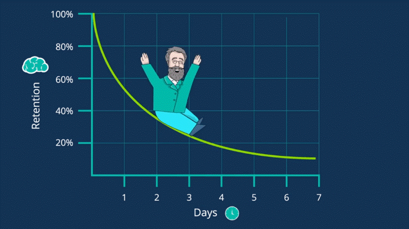

Have you ever come ever those unpleasing situations with mathematics where you felt so confident in your competence to nail the problem but maths betrayed you? All those familiar questions of trigo you can’t solve because either you forget formula or lost track of where to go next.
You prepared and practice for a test so much and have a believe scoring this time but your friend whom you know hadn’t given the effort and attention compared to what you did in maths. All those times you spend and attention have gone to vain out of nowhere. Should you break-up with such attention-seeking typical math partner and cut-off from her? You actually able to find people around you breaking up with mathematics but what if it is too late for you. You have already chosen some stream where it is core for your development and it is not optional. May be your aspiration and dream pegs on it. You are inspired to reach perfection or may be atleast non-embrassing grades in it.
Problem with maths
If you are curious and geeky like me, you can read it otherwise skip it…
Still there?
Okay. Then listen. The problem with math is its conciseness and symbolic language which is dictated by some logic which certainly not most people is able to do. It has high learning curve with so many steep highs and lows having icing on cake by forgetting curve.

Myths which people grow up listening
1. MATH REQUIRES LOGIC, NOT INTUITION
Few people are aware that intuition is the cornerstone of doing math and solving problems. Mathematicians always think intuitively first. Everyone has mathematical intuition; they just have not learned to use or trust it. It is amazing how often the first idea you come up with turns out to be correct.
2. MATH IS NOT CREATIVE.
Creativity is as central to mathematics as it is to art, literature, and music. The act of creation involves diametrical opposites--working intensely and relaxing, the frustration of failure and elation of discovery, satisfaction of seeing all the pieces fit together. It requires imagination, intellect, intuition, and aesthetic about the rightness of things.
3. YOU MUST ALWAYS KNOW HOW YOU GOT THE ANSWER.
Getting the answer to a problem and knowing how the answer was derived are independent processes. If you are consistently right, then you know how to do the problem. There is no need to explain it.
4. THERE IS A BEST WAY TO DO MATH PROBLEMS.
A math problem may be solved by a variety of methods which express individuality and originality-but there is no best way. New and interesting techniques for doing all levels of mathematics, from arithmetic to calculus, have been discovered by students. The way math is done is very individual and personal and the best method is the one which you feel most comfortable.
5. IT'S ALWAYS IMPORTANT TO GET THE ANSWER EXACTLY RIGHT.
The ability to obtain approximate answer is often more important than getting exact answers. Feeling about the importance of the answer often are a reversion to early school years when arithmetic was taught as a feeling that you were "good" when you got the right answer and "bad" when you did not.
6. IT'S BAD TO COUNT ON YOUR FINGERS.
There is nothing wrong with counting on fingers as an aid to doing arithmetic. Counting on fingers actually indicates an understanding of arithmetic-more understanding than if everything were memorized.
7. MATHEMATICIANS DO PROBLEMS QUICKLY, IN THEIR HEADS.
Solving new problems or learning new material is always difficult and time consuming. The only problems mathematicians do quickly are those they have solved before. Speed is not a measure of ability. It is the result of experience and practice.
8. MATH REQUIRES A GOOD MEMORY.
Knowing math means that concepts make sense to you and rules and formulas seem natural. This kind of knowledge cannot be gained through rote memorization.
9. MATH IS DONE BY WORKING INTENSELY UNTIL THE PROBLEM IS SOLVED.
Solving problems requires both resting and working intensely. Going away from a problem and later returning to it allows your mind time to assimilate ideas and develop new ones. Often, upon coming back to a problem a new insight is experienced which unlocks the solution.
10. SOME PEOPLE HAVE A "MATH MIND" AND SOME DON'T.
Belief in myths about how math is done leads to a complete lack of self-confidence. But it is self-confidence that is one of the most important determining factors in mathematical performance. We have yet to encounter anyone who could not attain his or her goals once the emotional blocks were removed.
11. THERE IS A MAGIC KEY TO DOING MATH.
There is no formula, rule, or general guideline which will suddenly unlock the mysteries of math. If there is a key to doing math, it is in overcoming anxiety about the subject and in using the same skills you use to do everything else.
Then what is a solution :
1. Regressive learning:
The way you learn other subjects specially those who are language person(good in English or any language) usually flunks at mathematics due to very same learning way they employs. Unlike languages or any other subject which can be learnt in satisfying sequence from where-ever you desire, math have highly-connected topics which requires revisit.
2. Balancing act between giving up too early and not giving up:
In Math if you give up too early you miss-out on moment of miracle to just learn. And if you do not give up timely miss out on opportunity to learn too. Sounds crazy? But it is due to einstellung effect which stops you to see better solution and sucks up your time and effort.
3. Knowing what you don’t know:
There is illusion of competence in math when you see someone(teacher on board) solving problem or solution you get feel that you know how to solve but then you got struck after certain steps. This because that solution is not yours’ or of yours’ earning of hardwork. You could mark the problem you wasn’t able to solve at first attempt or need someone’s help. You could also rate topic just like movie on your understanding on scale of 10 which can be updated anytime.
Note: The above solution are too brief to solve all your math worries and these are just teaser of what you can expect to come in future.
What to expect next(Teaser preview):
“Sad zombie, Bad zombie, Zombie without thought”
Posted By : Himanshu